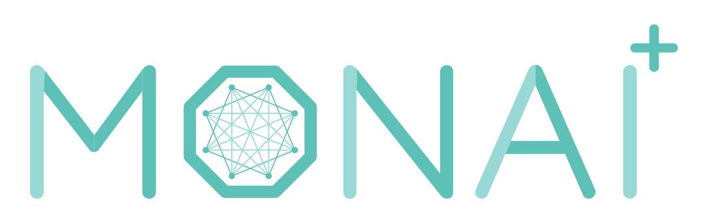

MONAI Deploy Informatics Gateway v0.0.0

Introduction
INTRO
Requirements
Development Requirements
- .NET 5.0
Runtime Requirements
- Docker 20.10.7 or later
Services
MONAI Deploy Informatics Gateway contains the following standard protocols to communicate with your medical devices:
- DICOM SCP: C-ECHO, C-STORE
- DICOM SCU: C-STORE
- ACR DSI API: The American College of Radiology’s Data Science Institute API
- DICOMweb client: QIDO-RS, WADO-RS, STOW-RS
- FHIR client: GET
DICOM SCP
The DICOM SCP Service accepts standard DICOM C-ECHO and C-STORE commands, which receive DICOM instances for processing. The received instances are stored immediately to the configured temporary storage location (InformaticsGateway>storage>temporary) and then uploaded to the MONAI Deploy Workflow Manager. All DICOM instances are stored on disk as-is using the original transfer syntax described in
the DICOM Interface section. The MONAI Deploy application developer must handle any encoding/decoding of the DICOM files within the applications. Please refer to the MONAI Deploy App SDK for further information.
DICOM SCU
The DICOM SCU Service enables users to export application-generated DICOM results to external DICOM devices. It queries the Results.Get API from the MONAI Deploy Workflow Manager to retrieve user-generated DICOM results assigned to the MONAISCU sink (InformaticsGateway/dicom/scu/sink).
Note
DICOM instances are sent as-is; no codec conversion is done as part of the SCU process. See the DICOM Interface SCU section for more information.
ACR DSI API
The ACR DSI API enables users to trigger inference requests via RESTful calls, utilizing DICOMweb & FHIR to retrieve data specified in the request. Upon data retrieval, the Informatics Gateway forwards the data to the MONAI Deploy Workflow Manager for job scheduling.